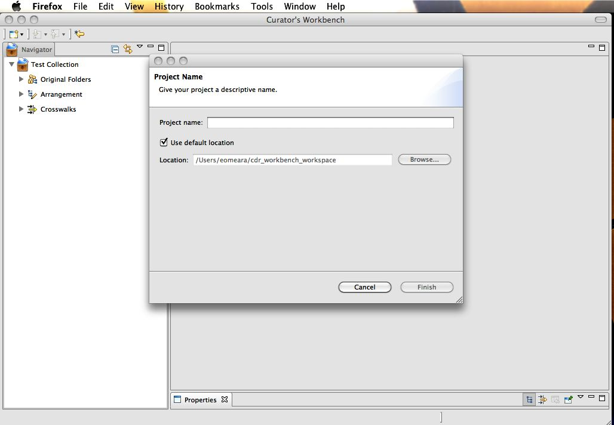

Creating Your Project
Each SIP or group of objects you manage in the Workbench is
called a "Project". You can work on numerous projects at once. To
create a project,
- Go to the File menu and select New > Workbench Project.
- Enter a project name and press "Finish".
Your project is divided up into three sections:
- Original Folders - Displays the original data you are
collecting. These folders can be any folder on the local computer, a
network drive or an iRods collection.
- Arrangement - Shows a display containing any objects
you have captured from the original folders. In this area you may
rename, rearrange, describe and remove objects (such as file
system-created objects, e.g. .DS_Store) in your submission.
- Crosswalks - Holds the
crosswalks to MODS metadata elements defined in your project.
Crosswalks allow you to define mappings between tabular metadata
records and MODS records for your projects.

Figure 1. Creating a project and giving it a project name. Note:
three sections of the project indicated in the left-hand sidebar.